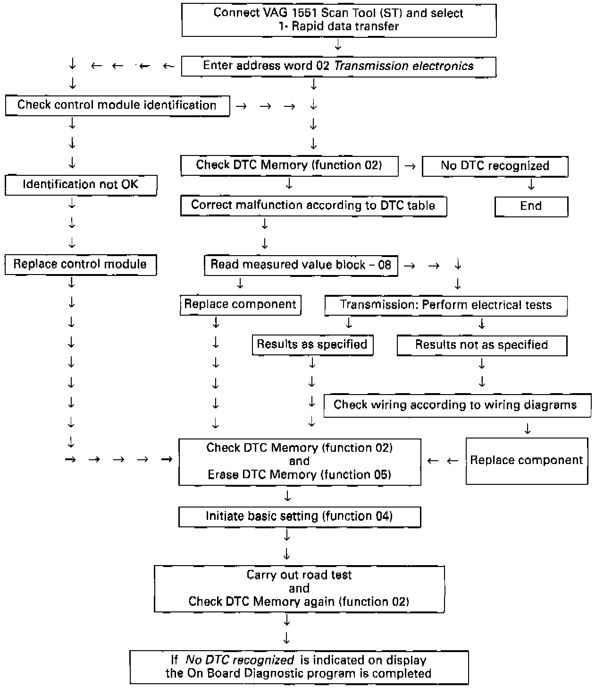

Operation CHARM
: Car repair manuals for everyone.
Home
>>
Volkswagen
>>
1997
>>
GTI (1H1) V6-2.8L (AAA)
>>
Repair and Diagnosis
>>
Transmission and Drivetrain
>>
Automatic Transmission/Transaxle
>>
Testing and Inspection
>>
Flow of Diagnosis
>>
096 Transmission
096 Transmission
Flow Of Diagnosis:
